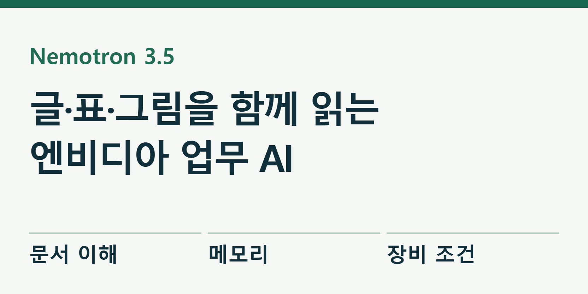
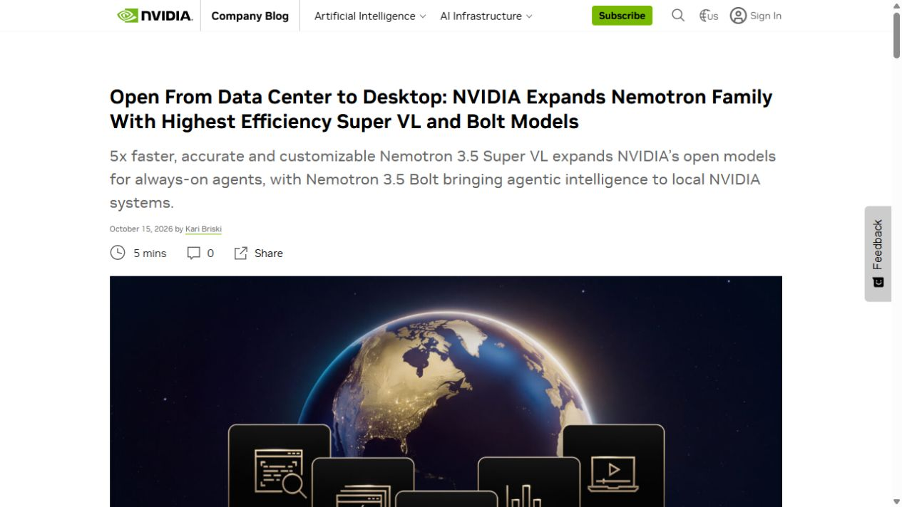
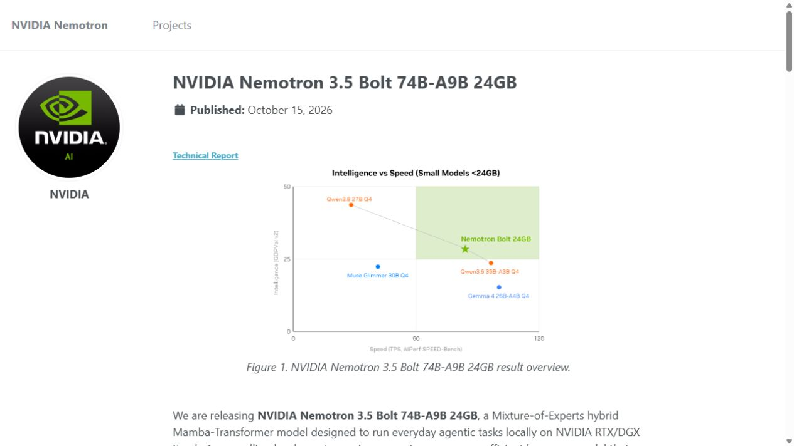

엔비디아 AI, 문서의 표와 그림까지 읽는다
엔비디아가 10월 15일 문서의 글·표·그림과 영상을 함께 이해하는 공개 AI ‘Nemotron 3.5 Super VL’을 내놨다. 기업이 자기 자료로 조정해 업무에 쓰도록 만든 모델이다. 같은 날에는 개인 장비에서 작업하는 용도로 크기를 줄인 ‘Bolt 74B-A9B 24GB’도 공개했다. 엔비디아 발표

회사 문서에는 글만 들어 있지 않다. 영수증의 금액은 작은 칸 안에 있고, 보고서의 결론은 다른 쪽의 그래프와 연결돼 있다. 문서의 문장을 잘 요약해도 표의 열을 잘못 읽으면 결과는 틀린다. 이번 모델이 겨냥하는 지점은 이런 자료를 한 과정에서 읽고 필요한 정보를 꺼내는 일이다.
예를 들어 영수증에서 날짜·상호·합계를 정리한다고 해 보자. 먼저 글자를 읽고, 어떤 숫자가 최종 합계인지 판단한 뒤, 정해진 항목에 값을 넣는다. 숫자를 옮기는 단계와 그 숫자의 의미를 구분하는 단계가 함께 필요하다. ‘문서를 읽는다’는 표현 안에 여러 일이 들어 있는 셈이다.
한 모델 안에서 글과 시각 자료를 연결한다
개발자용 설명에 따르면 Super VL은 문서 배치, 도표, 이미지, 영상 이해와 도구 사용을 묶었다. 글을 처리하는 AI와 이미지를 처리하는 AI 사이로 내용을 옮기는 대신, 같은 모델이 자료를 읽고 다음 작업을 결정하도록 설계했다.
여기서 VL은 시각 자료와 언어를 함께 다룬다는 뜻이다. OCR이라는 말도 나온다. OCR은 사진이나 스캔 속 글자를 찾아 문자로 바꾸는 기능이다. OCR이 ‘어떤 글자가 있는가’를 읽는다면, 표 이해는 ‘그 값이 어느 행과 열에 속하는가’를 판단하는 일까지 포함한다.
엔비디아가 소개한 기업 사례 중 Ramp는 영수증 이미지에서 상호·날짜·결제 정보를 정해진 데이터 형태로 뽑는 작업을 준비하고 있다. 공개 글의 비용·속도 개선 일부는 도입 기업이 기대하는 값이다. 모든 회사 문서에 이미 같은 효과가 확인됐다고 말할 수는 없다.
모델 전체에는 약 1,200억 개의 학습된 숫자가 있고 답변 한 조각을 계산할 때 약 120억 개가 참여한다. 필요한 일부를 골라 계산해 계산량을 줄이는 방식이다. 다만 계산에 쓰지 않는 부분도 다음 작업에서 필요하므로, 전체 모델을 보관할 메모리는 별도로 필요하다. 모델 크기는 결과의 품질을 설명하는 여러 조건 중 하나다.


‘다섯 배 빠르다’는 같은 일을 기준으로 읽는다
회사는 같은 규모의 공개 모델들과 비교해 특정 작업에서 최대 다섯 배 높은 처리량을 제시했다. 처리량은 일정 시간에 얼마나 많은 답을 만들어 낼 수 있는지를 말한다. 문서 한 건을 처음부터 끝까지 정확하게 처리하는 시간, 동시에 여러 건을 처리하는 양, 오답률은 서로 다른 측정값이다.
따라서 빠르다는 한 문장만으로 업무 비용을 계산하기는 어렵다. 영수증 100장을 빨리 읽어도 사람이 잘못 옮긴 금액을 다시 찾느라 오래 걸리면 총작업 시간은 줄지 않는다. 업무용 비교에서는 응답 속도와 함께 사람이 수정한 건수, 원문 대조에 쓴 시간까지 기록하는 편이 유용하다.
공식 모델 카드는 글자 읽기, 도표 추론, 영상, 코딩 등의 점수를 따로 공개한다. 숫자를 압축해 저장한 NVFP4와 더 정밀한 BF16도 분리한다. 같은 이름의 모델이라도 사용할 파일 형식과 작업 종류를 맞춰 비교해야 한다.
직접 도입을 검토한다면 정답을 사람이 확인할 수 있는 자료부터 시작하는 것이 좋다. 예를 들어 공개 가능한 영수증 열 장에서 상호·날짜·합계만 뽑게 하고 원본과 대조한다. 이 예시는 편집부가 제안하는 시험 순서이며, 이번 기사에서 모델을 실행해 얻은 성적은 아니다.
Bolt의 24GB는 압축 구성을 가리킨다
Bolt는 큰 Super VL에서 필요한 능력을 남기고 크기를 줄인 모델이다. 전체 약 740억 개 중 약 90억 개를 매번 계산하는 구성이며, 24GB 메모리 안에 들어가도록 특별히 압축했다. 단순히 모델 이름의 숫자만 줄여 출시한 것이 아니라 저장 방식과 실행 속도를 함께 조정했다. Bolt 기술 설명
설명서의 2비트 압축은 모델 숫자를 아주 작은 단위로 저장하는 방법이다. 파일이 작아지는 대신 정확도가 떨어질 수 있어, 회사는 압축 뒤 능력을 보완하는 학습도 진행했다고 밝혔다. ‘24GB’는 이 구성을 설명하는 수치이며 모든 24GB 장비에서 같은 속도가 나온다는 보장은 아니다.
회사가 제시한 구체적인 속도 시험은 특정 RTX Spark 하드웨어와 실행 프로그램, 요청 조건을 사용했다. 따라서 독자의 데스크톱 메모리가 24GB라는 이유만으로 그 시험을 그대로 적용할 수 없다. 그래픽 장치가 쓸 수 있는 메모리, 실행 프로그램 지원, 다른 앱이 차지한 공간을 함께 본다.
더 작은 ‘Bolt E4B 4GB’는 10월 23일 제공 예정으로 발표됐다. 10월 18일 현재 기사에서는 예고 단계다. 지금 받을 수 있는 Super VL·Bolt 24GB와 곧 나올 4GB 모델을 한꺼번에 ‘모두 출시’로 묶지 않는 것이 중요하다.
자기 회사 자료로 고칠 수 있지만 준비가 필요하다
공개 모델의 장점은 회사의 문서 형식과 업무 규칙을 반영해 조정할 수 있다는 점이다. 예를 들어 거래처별 영수증 모양이 다르거나, 특정 항목을 내부 회계 코드로 바꿔야 한다면 그 작업을 중심으로 시험과 추가 학습을 설계할 수 있다. 회사 자료를 읽는 범용 AI에서 회사 규칙을 따르는 업무 도구로 좁혀 가는 방식이다.
추가 학습 절차가 전부 같은 상태로 공개된 것은 아니다. 현재 훈련 안내에는 Super 3.5에 사용한 일부 학습 자료와 구성 요소가 아직 공개되지 않았다고 적혀 있다. 공개된 파일을 실행하는 일과 엔비디아가 한 훈련 전체를 그대로 재현하는 일은 구분된다.
Super VL 모델 카드의 이용 조건은 OpenMDW 1.1로 연결된다. 모델, 실행 도구, 함께 사용하는 자료의 조건을 각각 확인하는 편이 정확하다. 사내에서 모델을 돌리더라도 외부 검색이나 저장 서비스를 연결하면 자료가 나가는 경로가 생길 수 있으므로 도구 연결도 따로 점검한다.
문서 자동화에서 가장 먼저 사람이 남겨 둘 일은 원본과 결과의 대조다. 특히 금액, 날짜, 계좌처럼 한 글자 오류의 영향이 큰 값은 결과만 읽어서는 놓치기 쉽다. 원문 위치를 함께 반환하게 하고 검토자가 바로 확인할 수 있도록 만들면 자동화 범위를 단계적으로 넓히기 좋다.
이번 발표는 엔비디아가 GPU를 파는 데서 더 나아가, 그 장비에서 문서를 읽고 일을 처리할 AI와 실행 방법까지 제공한다는 소식이다. 독자에게 필요한 판단은 ‘무조건 가장 빠른 AI’가 아니라 ‘내 문서에서 얼마나 정확하고, 어떤 장비와 관리가 필요한가’다. 작은 정답 자료로 그 차이를 확인하는 것이 출발점이다.
출처와 더 읽을 자료
대표 이미지는 제품명과 기사의 핵심을 편집부가 배치한 설명용 표지이며 실제 제품 화면이 아니다. 본문의 원본 화면·영상은 각 자료 아래에 출처와 제공 주체를 표시했다. 직접 실습하지 않은 회사 시연을 편집부의 실행 결과로 표시하지 않았다.